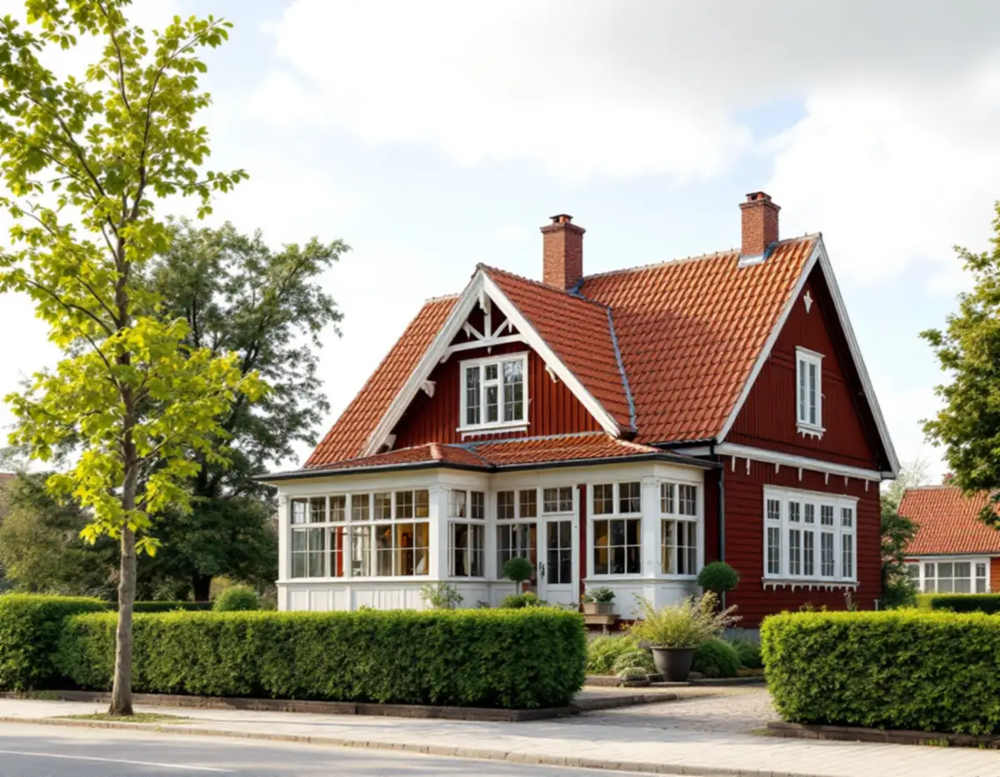
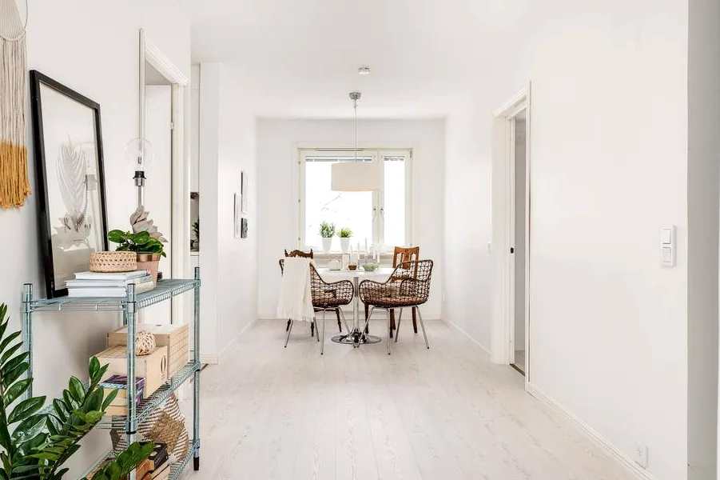
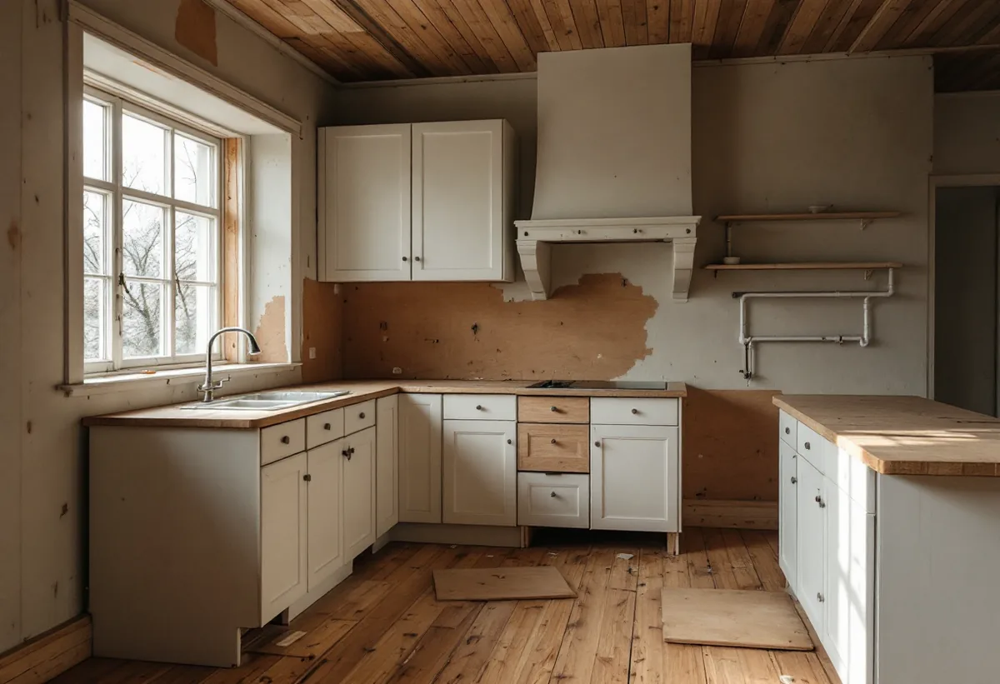

Platsbesök
Gratis besök där vi går igenom huset, elen och kanalerna.

I Älvsjö villastad står äldre trävillor på stora trädgårdstomter.
Beskriv jobbet kort.
Något blev fel. Kontrollera uppgifterna eller ring 08 12 410 276.
Vi tittar på jobbet på plats innan du får offert.
Du ser vad som ingår och vad det kostar.
Vi drar av ROT direkt och sköter ansökan.
Geal Entreprenad AB, Bromma. Org.nr 559303-7566.

När ett sådant hus renoveras från grunden är det ofta elen, köket och badrummet som behöver göras om, medan fasaden ska få vara kvar. Geal Entreprenad AB renoverar hela huset i en sammanhållen entreprenad.
Stadens vägledning Varsam utveckling av småhus- och villaområden berättar att små stationssamhällen växte fram när järnvägen byggdes ut, och att några av dem – Spånga och Älvsjö – blev municipalsamhällen på 1910-talet med egen administration och beskattningsrätt. Stadsplanen för Älvsjö villastad togs fram av Per Olof Hallman enligt samma principer som hans planer för den tidiga trädgårdsstaden.
I vägledningens tabell står del av Älvsjö som kulturhistoriskt värdefull miljö med generösa byggrätter. Enligt stadens områdesfakta för 2025 fanns 730 bostäder i Älvsjö, varav 214 i småhus och 191 med äganderätt.

Stadsmuseet började sommaren 1977 inventera Stockholms förorter, och Älvsjö var en av de fjorton första stadsdelarna. I museets redogörelse framgår att inventeringen gällde bebyggelse från tiden före omkring 1930 som hade kvar sin ursprungliga karaktär, och att det endast var exteriörerna som besiktigades.
För en totalrenovering betyder det att fasaden, fönstren och verandan är det som andra har dokumenterat och bedömt. Interiören har större frihet, men varsamhetskravet gäller ändå. Vi gör om planlösning och installationer inifrån och låter det som syns från gatan vara kvar om inget annat är bestämt.
Elsäkerhetsverket skriver att det inte finns några regler som tvingar dig att uppgradera en befintlig elanläggning när nya krav införs, så länge den är i gott skick och används som tidigare. Men om du bygger om eller utvidgar anläggningen ska ombyggnaden följa de nya kraven. Görs ett sovrum om till badrum eller byggs huset ut behöver elen oftast ändras.
Allt elinstallationsarbete ska göras av ett elinstallationsföretag som är registrerat hos Elsäkerhetsverket för verksamhetstypen Bostäder, och det går att kontrollera i myndighetens tjänst Kolla elföretaget. I en totalrenovering samordnar vi elarbetet med rivning och ytskikt, så att nya ledningar dras innan väggarna stängs.
Att flytta köket kräver inte bygglov, men Stockholms stad skriver att anmälan behövs om flytten påverkar bärande konstruktion, brandskydd eller ventilation, eller om en ny VA-stam dras i ett nytt schakt. Köket ska ha tillräcklig frånluft och uppfylla kraven för imkanal, och staden råder att tidigt rådgöra med sotaren om nya eller ändrade kanaler.
Går köksfläkten till en murad kanal i skorstensstocken kontrollerar vi kanalen innan köket planeras. Fasaden behåller vi: på ett småhus kan många fasadändringar göras utan lov, men inte om huset eller området är särskilt värdefullt. Läs mer under köksrenovering i Älvsjö och badrumsrenovering i Älvsjö.
Gratis besök där vi går igenom huset, elen och kanalerna.
Planlösning, kök, bad och eventuell anmälan.
Det som ska bort rivs, det som ska sparas skyddas.
Registrerad elinstallatör och VVS före stängda väggar.
Golv, väggar, kök och bad.
Gemensam genomgång och dokumentation av elen.
I ett småhus räknar Skatteverket bland annat rivning av väggar, ny planlösning, tilläggsisolering, kakel och klinker och andra förbättringsarbeten som rotarbete. Avdraget gäller arbetskostnaden, inte material och resor.
Avdraget är högst 30 procent av arbetskostnaden och högst 50 000 kronor per person och år. Äger ni bostaden två kan båda göra avdrag. Där avdraget gäller drar Geal det direkt på fakturan.
Husets storlek och skick, hur mycket av elen som byggs om, om köket flyttas och kanaler behöver göras om, och hur mycket av den ursprungliga inredningen som ska sparas. Efter ett gratis platsbesök får du ett skriftligt kostnadsförslag.
Renovera hela huset eller lägenheten.
Villarenovering →Takbyte, takbesiktning och plåtarbeten.
Takläggare i Älvsjö →Långbro, Herrängen och Långsjö.
Takrenovering i Älvsjö →Villatomten, prickmarken och vattnet.
Attefallshus i Älvsjö →Villorna, träbjälklaget och golvvärmen.
Badrumsrenovering i Älvsjö →Byggrätt, gamla planer och planändring.
Byggföretag i Älvsjö →Puts nedtill, panel upptill.
Fasadmålning i Älvsjö →Villastad, nya grannhus och puts på trä.
Fasadrenovering i Älvsjö →Fönster och tilläggsisolering.
Fönsterbyte i Älvsjö →Småspröjs och fönsterluckor.
Fönsterrenovering i Älvsjö →Golvvärme under trägolv i äldre villor.
Golvläggare i Älvsjö →Slipa och ge golvet en ny kulör.
Golvslipning i Älvsjö →Villastad, flerlägenhetsvillor och kök i lager.
Köksrenovering i Älvsjö →Villastad, egnahem och småstugor i Älvsjö.
Målare i Älvsjö →Plåttak för solceller, kupor och verandor i Älvsjö.
Plåtslagare i Älvsjö →Staket, grind och plank i villastaden.
Snickare i Älvsjö →Vinden, kupan och byggrätten.
Takbyte i Älvsjö →Bårder och dekor i villastaden.
Tapetsering i Älvsjö →Byggrätt, trädgårdssida och volym.
Tillbyggnad i Älvsjö →Eller ring 08 12 410 276, mån–fre 08–17.
Beskriv jobbet kort.
Något blev fel. Kontrollera uppgifterna eller ring 08 12 410 276.